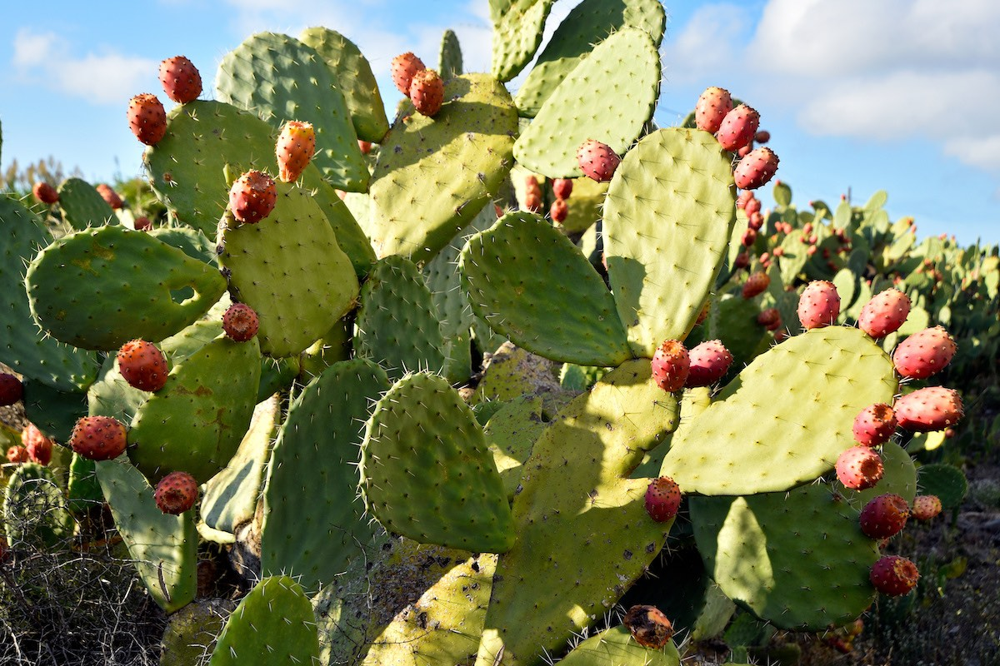

Le nostre offerte autunnali!!!

Acquista 0,78€/Kg
Fichi d'india
"Tenace monumento dei deserti": è con questa metafora che
viene al meglio descritto il carattere del fico d'India, frutto coronato di spine
che sopravvive alle aride e secche temperature desertiche.
Per molto tempo, il fico d'india ha rappresentato un simbolo della tradizione
Azteca: oggi è fonte di interesse non solo in ambito alimentare ed agricolo, ma
anche in quello fitoterapico e cosmetico.
L'uso alimentare dell'opuntia si riferisce ai frutti, ricchi di zuccheri, calcio,
fosforo e vitamina C; possono essere utilizzati freschi oppure destinati alla
fabbricazione di liquori, gelatine, marmellate, dolcificanti e succhi. Persino i
cladodi sono sfruttati dall'industria alimentare: vengono conservati sotto aceto o
canditi.
Il fico d'india può essere usato anche come foraggio.
In Sicilia si ha la tradizione di produrre un particolare sciroppo dalla polpa priva
di semi: è utilizzato per preparare dolci rustici tipici.
Raccomandazioni
Il frutto non dev'essere mangiato in quantità eccessiva: potrebbe provocare,
infatti, blocco intestinale; è per questo sconsigliato nelle persone che soffrono di
diverticoli intestinali.
| Fichi d'india, valori per 100g | |
|---|---|
| Energia | 53kcal |
| Fibre | 5g |
| Carboidrati | 13,0g |
| Grassi | 0,1g |
| Proteine | 0,8g |
| Acqua | 83,2g |
Acquista 0,78€/Kg
Cachi
Il cachi (o kaki), frutto paffuto e fragile, è divenuto simbolo di pace nel secondo
dopoguerra: infatti, solo pochi di questi alberi sopravvissero coraggiosamente alla
devastante esplosione atomica di Nagasaki.
Come abbiamo visto, il cachi va consumato dopo la maturazione completa: la polpa,
flaccida e gelatinosa, può esser mangiata con un cucchiaio, oppure può essere
utilizzata per la realizzazione di centrifughe di frutta, marmellate, macedonie e
per insaporire yogurt. In Giappone, il cachi è l'ingrediente principe per la
preparazione di alcuni vini (in genere a basso grado alcolico), oltre a prestarsi
per la realizzazione del sakè.
In genere, il cachi va comprato ancora acerbo: per velocizzare la maturazione, è
consigliato accostarvi alcune mele, in grado di sviluppare etilene, ormone gassoso
che accelera la maturazione del frutto.
Diverso è l'impiego del cachi vaniglia (cachi mela): il frutto è simile alla mela
per forma e consistenza (la polpa soda, quasi croccante, si taglia a fette), ma il
sapore è tipico del cachi.
| Cachi, valori per 100g | |
|---|---|
| Energia | 65kcal |
| Fibre | 2,50g |
| Carboidrati | 16g |
| Grassi | 0,30g |
| Proteine | 0,60g |
| Acqua | 82g |
Acquista 0,90€/Kg
Avocado
Avocado è il nome comune utilizzato per indicare un frutto
tropicale e la pianta centroamericana che lo produce (P. americana, della Famiglia
botanica Lauraceae).
Nonostante appartenga alla categoria dei frutti carnosi, l'avocado non ha le
caratteristiche chimiche dei prodotti che siamo più abituati a consumare in Italia.
Dell'avocado si consuma la polpa, mentre buccia e nocciolo non sono commestibili.
In Italia l'avocado non è particolarmente utilizzato come frutto fresco da mangiare
crudo; al contrario, sembrano in continua diffusione le ricette che lo utilizzano
come ingrediente. Ad esempio:
- Salse, come la famosissima guacamole
| Avocado, valori per 100g | |
|---|---|
| Energia | 160kcal |
| Fibre | 6,7g |
| Carboidrati | 8,53g |
| Grassi | 14,66g |
| Proteine | 2,0g |
| Acqua | 73,23g |
Acquista 2,90€/Kg